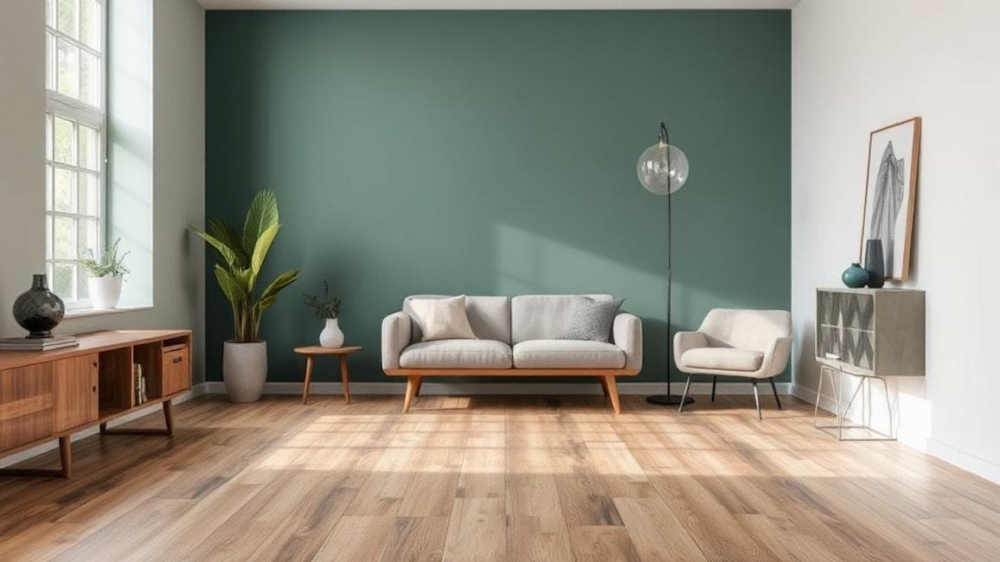
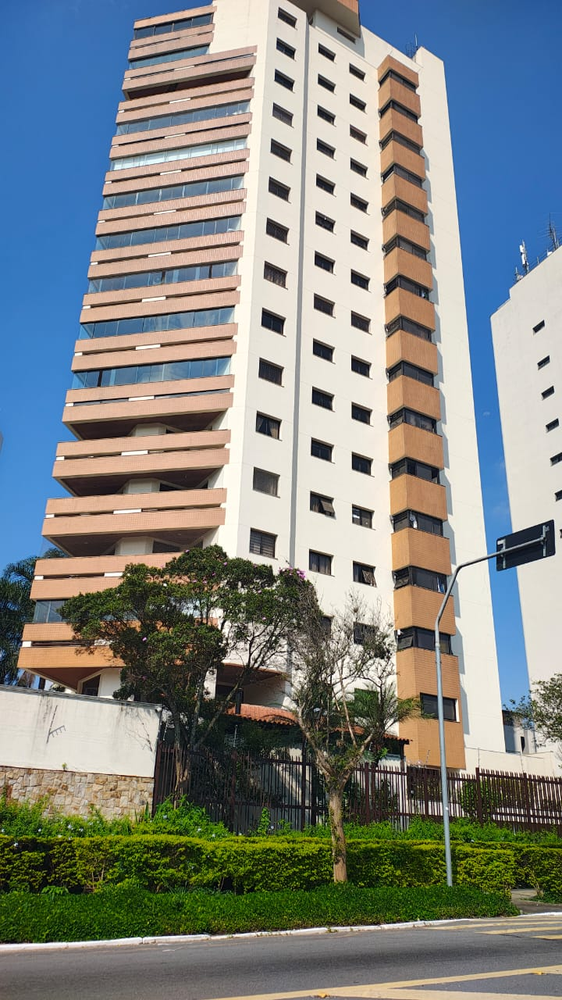
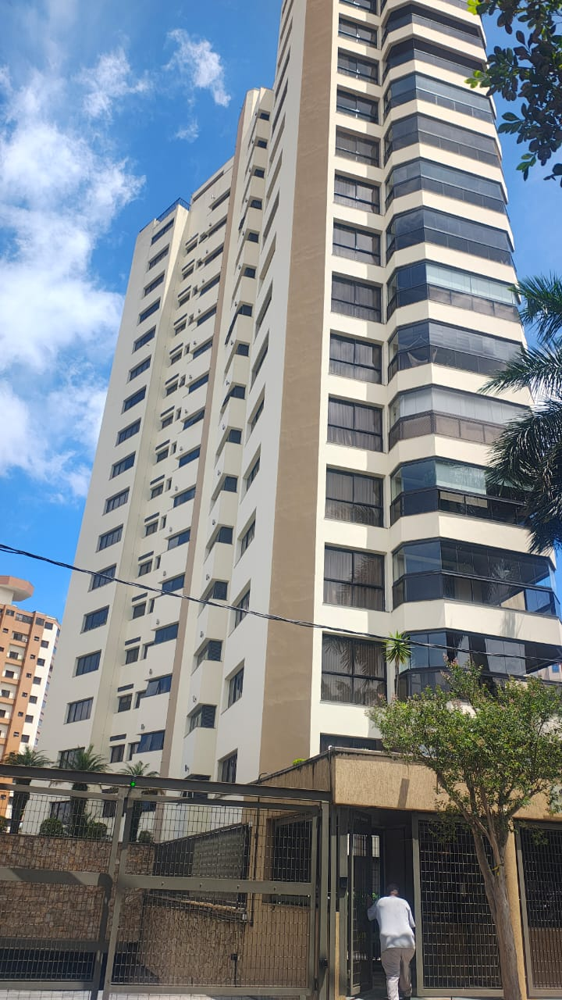

Pintura de edifícios
Serviços de pintura de edifícios em geral, em áreas internas e externas.
Resicril Pinturas · São Paulo
Pintura de edifícios, revestimentos, resinas e acabamentos em gesso e estuque em São Paulo. Converse com a Resicril Pinturas sobre o seu projeto.
Vila Carrão, São Paulo/SP
Amostra ilustrativa
Escolha uma corSelecione no leque
Um novo começo para o seu espaço.
Vamos conversar01 / Sobre a Resicril
Somos a Resicril Pinturas, na Vila Carrão, em São Paulo. Trabalhamos com pintura de edifícios, aplicação de revestimentos e resinas em interiores e exteriores, e obras de acabamento em gesso e estuque.
Cada espaço tem sua história — e uma nova cor pode fazer parte dela. Conte o que você imagina para o seu ambiente e converse com a gente sobre as possibilidades do seu projeto.
Fale com a Resicril02 / Serviços
Pintura, revestimentos, resinas e acabamentos.
Vamos conversar sobre o seu projeto.
Serviços de pintura de edifícios em geral, em áreas internas e externas.
Aplicação de revestimentos e resinas em interiores e exteriores.
Obras de acabamento em gesso e estuque.
Explore possibilidades
Escolha uma tonalidade e veja a parede ganhar uma nova pintura.

Simulador de ambientesConte a sua ideiaO que você gostaria de mudar no ambiente?
Compartilhe referênciasFotos e inspirações ajudam a explicar seu projeto.
Converse sobre o orçamentoTire suas dúvidas diretamente com a Resicril.
03 / Trabalhos realizados
Fotografias reais dos nossos trabalhos.
Veja cada projeto mais de perto.


Clique ou toque nas fotografias para ampliar.
04 / Vamos conversar
Conte sobre seu projeto e solicite um orçamento com a Resicril Pinturas.